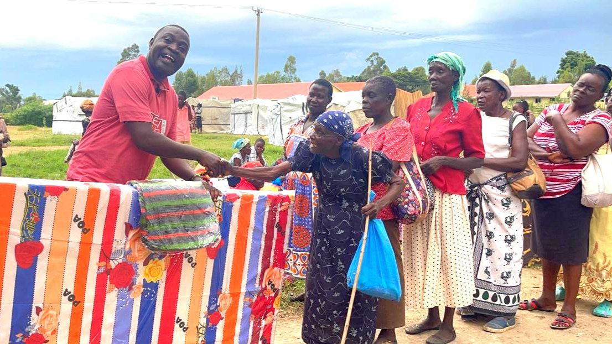
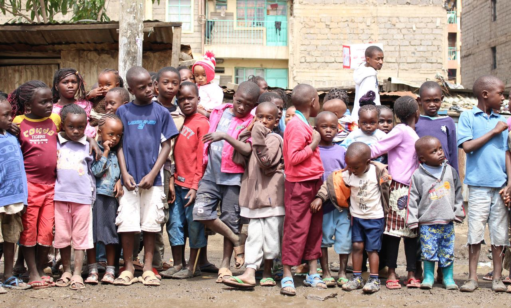
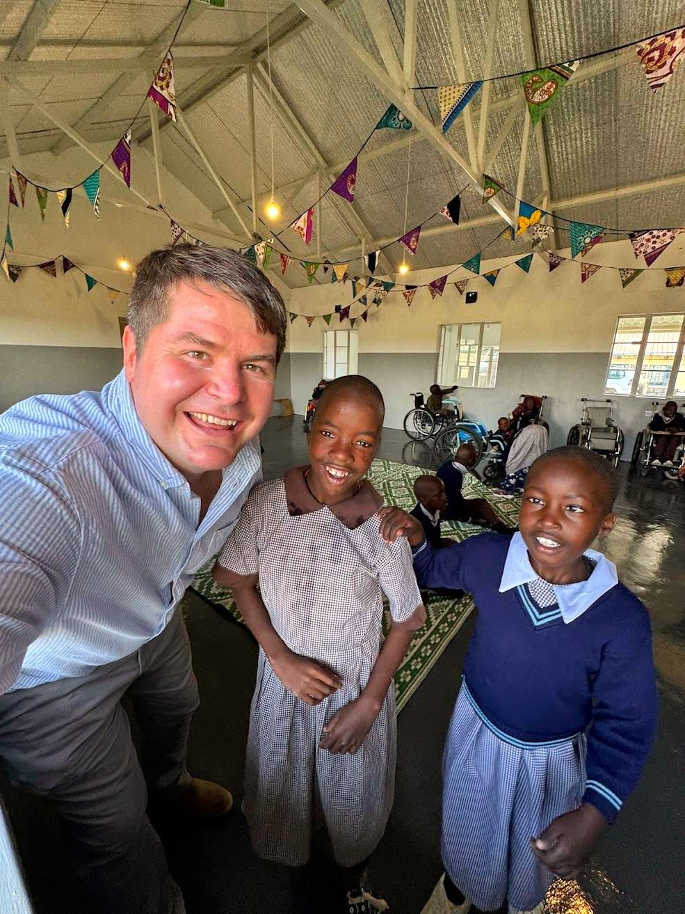
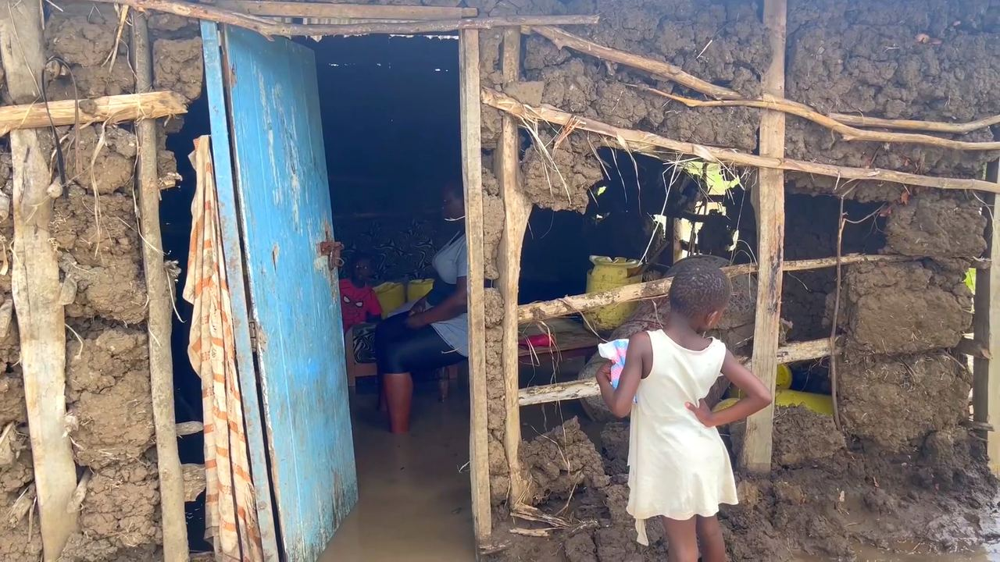
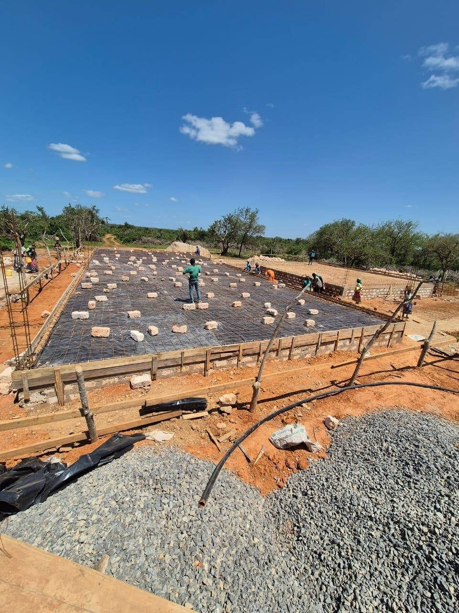

Aid and Emergency Relief
We work actively to provide people with food, water, clothing, and a safe place to live. Slum areas and flood-affected regions of Kenya are examples of where we are making a difference.


Empowering Families
The Empowering Families project supports 30 families selected by the village leaders because they are in great need of assistance. Through training in agriculture, poultry farming, tailoring, and shoemaking, the families gain the opportunity to build a stable income. The goal is for them to become self-sufficient within two years and no longer dependent on external aid.

The rescue center in Nairobi
Education gives people dignity, hope, and opportunities – both for individuals, families, and entire communities.
We work closely with local partners and authorities to provide children and young people with an education that opens doors to employment and a stable income.
In addition, we run the project “Gold in the Slum / Diamonds in the Dust,” which offers support and guidance to teenage girls living under difficult conditions in the Kariobangi slum.
The rescue center also provides activities, temporary shelter and food, for young mothers in need of immediate assistance – a so-called shelter home.

Tharura Special School
We are proud to support this important project! At Tharura Special School, children with physical disabilities are given the opportunity to learn, grow and dream of a better future.
Through our collaboration with Generous Giving Nanyuki in Laikipia County, we have contributed to the construction of a new boarding school with modern toilets and bathrooms. We also support education that is specifically tailored to the most vulnerable children.
This project makes a big difference – every single day.

Flood-Affected Families in Ombaka
The Ombaka area in Kisumu has been severely affected by flooding. Many families have lost everything they owned and are still living in simple tents with almost no protection against the weather.
Through this project, we are able to help bring new hope. Together, we are building safe homes for families who have lost everything. The selection is done in cooperation with a local flood committee, led by representatives from the village itself, people who know the needs best.
When a family receives the keys to their new home, the joy is indescribable.
“At last, our children can sleep safely again,” one of the mothers said.
This project transforms lives, restores dignity – and builds a stronger community.

Medical clinic in Kavunzoni
In the hot landscape of Kavunzoni, Kilifi County, something remarkable is happening.
Here, together with the local community, we have started a community development project that is truly transforming lives.
It all began with a community meeting in the village. Mothers, fathers, and elders shared their concern – the nearest hospital was 17 kilometers away, more than four hours of walking in the scorching sun. Many did not receive the help they needed in time.
Out of this need, the dream of a clinic was born.
Through a close partnership between TV12/Bedehuskanalen, New Life Mission - Aid / #LoveIsAction, and several partners, the dream became a reality.
Today, a clinic focused on safe childbirth and basic medical care stands in the heart of the village – a place where lives are saved and hope is born.
This project became possible because many contributed:
- The villagers donated the land and have taken strong local ownership.
- New Life Mission - Aid / #LoveIsAction carried out the building of the clinic.
- The Belgian organization Kitanda provided clean water and solar energy.
- Local health authorities operate the clinic, with midwives, nurses, medicines, and equipment.
Together, we have created more than a building – we have created a place where love becomes action, and where the future looks brighter for all of Kavunzoni.
Other project areas
See all projects
Education
Education for children and young people provides opportunities, knowledge, and lasting value for individuals, families, and local communities.

Mission
Reaching people with the gospel is an important and natural part of all our projects. The Christian faith is the foundation of our work.

Community Development
Through active collaboration with local partners, we maintain a strong focus on the environment, such as cleaning up plastic waste in Kenya and creating safe and healthy workplaces.
Support us
Give with Vipps, bank transfer or SMS, or become a regular partner and support the work every month.
Become a partner